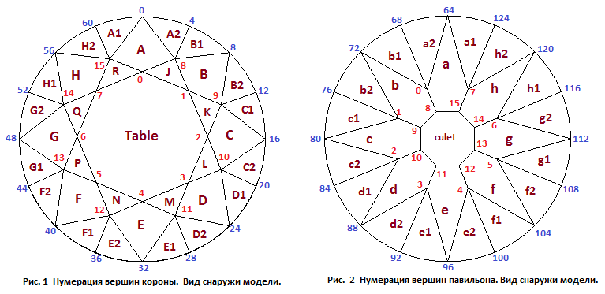
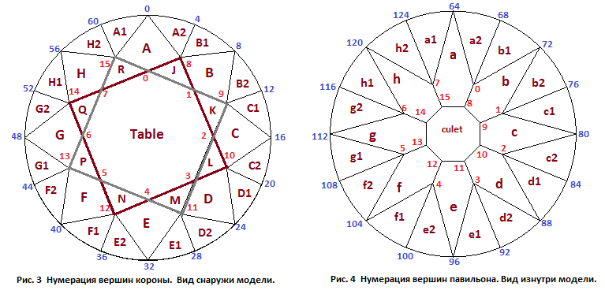
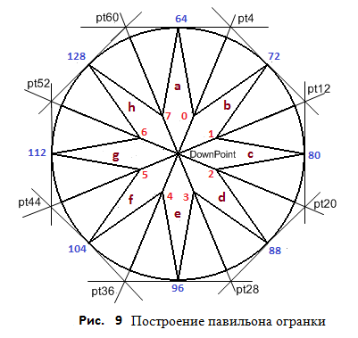
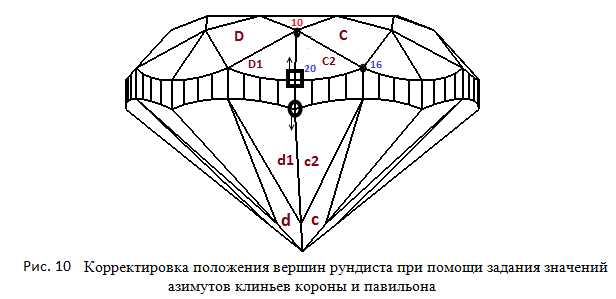

В данном разделе мы создадим модель многогранника, который называется бриллиантом.
Самыми распространенными на сегодняшний момент являются круглые бриллианты с 57 гранями. Бриллиант - это самая известная огранка. Больше половины всех бриллиантов в мире приходится, на камни круглой формы. По ссылке Brilliant - Light Dispersion можно увидеть круглый бриллиант отображенный при помощи кубических карт. При нажатии на приведенной по ссылке странице кнопки Inverse многогранник отобразится на черном фоне.
Если растянуть многогранник вдоль одной из осей в горизонтальной плоскости то можно получить огранку которая имеет название овал. Существует еще один вариант подобных многогранников. Это овал с лунными гранями (лунные грани будут подробно рассмотрены в следующих главах). Подобный многогранник можно увидеть еще и по ссылке при помощи кубических карт MoonOval - Light Dispersion.
Как и большинство других огранок, бриллиант состоит из трех частей – короны (верхняя часть многогранника), рундиста (средняя часть многогранника) и павильона (нижняя часть многогранника). Схематичные изображения короны и павильона, а также нумерация вершин показаны на рисунках 1, 2, 3 и 4. На рисунке 1 показана нумерация вершин короны при взгляде на нее сверху, а на рисунке 2 - нумерация вершин павильона при взгляде на него снизу и наблюдателе находящимся снаружи модели. Если в программе повернуть модель соответствующим образом, то при запущенном режиме индикации номеров вершин, мы увидим ту же нумерацию, что мы видим на рисунках 1 и 2.
Однако, иногда требуется сопоставить нумерацию вершин короны и павильона. В этом случае удобно представить, что наблюдатель смотрит на павильон сверху находясь внутри модели. На корону он смотрит также сверху. Нумерация вершин при таком расположении наблюдателя показана на рисунках 3 и 4. Мы видим что номера вершин павильона на рисунке сответствуют номерам вершин короны в большей степени, чем на рисунках 1 и 2. Построение программы для отображения модели при наличии рисунка 4 окажется более наглядным. Например, из трехмерной модели многогранника видно, что грань b павильона расположена под гранью B короны. Когда мы изображаем павильон так, как если бы смотрели на него снаружи (рисунок 2), требуемого соответствия положений граней короны и павильона нет.
Отметим еще, что в дальнейшем грани короны мы будем обозначать заглавными латинскими буквами, а павильона - прописными. На рисунках используется отдельная нумерация для вершин короны, рундиста и павильона. Для того чтобы увидеть сквозную нумерацию всех вершин требуется нажать на панели управления кнопку "All".
Основной гранью короны является площадка. На рисунках она обозначена как Table. Обычно она является самой крупной гранью при любой форме огранки алмаза и расположена перпендикулярно оси бриллианта. Площадка играет основную роль как источник блеска и игры бриллианта. Грани, обозначенные на рисунках как J, K, L, M, N, P, Q и R называются гранями звезды или верхними клиньями короны. Грани звезды примыкают к площадке. В бриллиантовой огранке их 8 и при просмотре сверху они, сочетаясь с площадкой, выглядят как звезда. Площадку и восемь граней звезды можно представить как объединение двух фигур, каждая из которых по форме подобна квадрату (рисунок 3). Первый квадрат образует площадка и грани J, L, N и Q, а второй – площадка и грани K, M, P и R. Для задания степени отклонения этих фигур от истинных квадратов в бриллианте, а также в огранках, у которых форма короны подобна форме короны бриллианта, вводится специальный параметр имеющий название Square table. Значение этого параметра напрямую определяет значение другого, очень важного, для многогранника бриллиант параметра, а именно параметра, который называется Star facets. Связь между этими двумя параметрами мы подробно рассмотрим в дальнейшем. У правильно построенного круглого бриллианта, у которого значение удлинения равно 1.0, значение параметра Square table должно быть равно 0. В этом случае все верхние клинья короны имеют одинаковый размер. На короне, показанной на рисунке 3, при помощи жирных линий выделены два упомянутых квадрата, развернутых относительно друг друга на 45º. Площадка этого многогранника очень близка по форме к правильному восьмиугольнику.
Восемь четырехугольных граней A, B, C, D, E, F, G и H называются основными гранями короны. Они простираются от площадки до рундиста. Восемь пар граней короны, обозначенных на рисунках как A1, A2, B1, B2 . . . H1, H2, называются клиньями верха или нижними клиньями короны.
Заметим, что форма короны очень многих типов огранок, подобна форме короны бриллианта. Прежде всего, это относится к огранкам типа маркиз и груша. Корона огранки сердце также во многом подобна короне бриллианта, хотя и имеет больше граней. Форма короны огранок типа "подушка" (cushion) также подобна короне бриллианта. Однако, хотя ничто не мешает рассчитать положение вершин короны подушки точно таким же способом, который мы использовали для бриллианта, обычно используется совершенно иной способ ее построения. Короны треугольных и, даже, пятиугольных огранок, также во многом похожи на корону бриллианта. Исходя из вышесказанного, можно считать форму короны огранки бриллиант наиболее часто используемой и для большинства других типов огранок.
Рундист реальной огранки при ее создании стараются максимально приблизить по форме к цилиндру, направляющей которого является окружность. Если огранка имеет удлинение, то очень желательно, чтобы рундист максимально приближался по форме к цилиндру с направляющей в виде эллипса.
В модели бриллианта необходимо сделать аппроксимацию цилиндра, представляющего рундист, набором плоских, вертикально расположенных, граней. Обычно для аппроксимации рундиста бриллианта используется 32, 64 или 128 граней. В нашей модели мы будем использовать в качестве рундиста 64 грани, которые вписаны в соответствующий цилиндр. Заметим, что не только в моделях, но и в реальных огранках, также иногда делают фацетированный рундист. Фацетированный рундист – это рундист, поверхность которого покрыта гранями. Обычно фацетированный рундист создают у достаточно крупных алмазов, у которых вес превышает, по крайней мере, 0.7 карата.
Грани a, b, c, d, e, f, g и h называются основными гранями павильона. В тех многогранниках, где эти восемь граней сведены в самой нижней своей части в одну точку (шип), эти грани представляют собой четырехугольники. В огранках, где присутствует грань калетты, эти грани являются пятиугольниками, а точка пересечения плоскостей, в которых лежат эти грани, обычно называют или виртуальным шипом или виртуальной калеттой огранки.
В идеальном бриллианте центры площадки, рундиста и шип (или центр плоскости калетты) должны лежать на оси симметрии бриллианта. Иногда, исходя из заготовки для бриллианта, калетта или шип может незначительно отклоняться от оси симметрии бриллианта. Плоскость, в которой лежит калетта, также как и площадка огранки, должна быть расположена перпендикулярно (это важно) оси бриллианта, которая совпадает с осью Z. При создании программы мы рассмотрим построение такой огранки, в которой присутствует грань калетты и предусмотрена возможность задания значения смещения центра калетты от вертикальной оси огранки в горизонтальной плоскости - примерно также как это сделано для модели октагона (глава 6).
Грани павильона a1, a2, b1, b2 . . . h1, h2, которые примыкают к рундисту, называются клиньями павильона. Внешний вид павильона очень в большой степени зависит от того, насколько близко к калетте находятся точки пересечения плоскостей в которых лежат клинья павильона с плоскостями, в которых расположены основные грани павильона a, b c, d, e, f, g и h. Параметр, определяющий координату Z этих точек (применительно к павильону будем говорить о "глубине" этих точек), называется Lower facets depth. Этот параметр задает в процентах глубину указанных точек относительно глубины павильона.
Корона многогранника состоит из 33 граней (с учетом грани площадки), а павильон – из 24 граней. Если нижняя часть павильона ограничена плоскостью калетты, то к числу граней павильона добавляется еще одна восьмиугольная грань. Таким образом, общее количество граней у бриллианта равно при наличии грани калетты 58 (грани рундиста при подсчете не учитываем). Как уже говорилось выше, у идеального бриллианта размер калетты обычно или очень мал или нижние грани павильона вообще сведены в одну точку – шип огранки. В последнем случае общее число граней бриллианта равно 58 – 1 = 57.
// СДМ - структура данных модели
var lw = 1.0; // отношение длины огранки к ее ширине
// Рундист
var r = 0.2; // толщина рундиста
var square_deviation = 0.0001; // квадратичность рундиста
// Корона
var beta = 30*DEGREE; // угол наклона граней короны
// A - H к горизонтальной плоскости OXY
var t = 0.57; // ширина площадки (по оси OY)
var dSquare = 0.0001; // величина значения отличия от квадратов,
// многоугольников, которые состоят
// из площадки и граней звезды
// Павильон
var alpha = 50*DEGREE; // угол наклона граней павильона a - h
// к горизонтальной плоскости
var hPavFacet = 0.60; // глубина нижних вершин фасет павильона
// Калетта
var culet = 8*PERCENT; // размер калетты
var culet_R = 0.00001; // смещение калетты в процентах от диаметра
var culet_A = 0*DEGREE; // направление (азимут) смещения калетты
// Азимуты примыкающих к рундисту граней
var up_az = 11.25*DEGREE; // азимут граней короны A1, A2, B1, B2 ...
var low_az = 11.25*DEGREE; // азимут граней павильона a1, a2, b1, b2 ...
Первым этапом построения практически любой огранки является вычисление координат вершин рундиста. В качестве направляющей для цилиндра, на основе которого строится рундист бриллианта, обычно берется окружность. Если бриллиант имеет удлинение не равное 1.0 вдоль оси OX, то в качестве направляющей цилиндра используется эллипс. Как известно, любой эллипс при одинаковом значении длины его двух главных осей превращается в окружность. Поэтому чтобы при желании можно было из идеального круглого бриллианта сделать бриллиант со значением удлинения огранки (lw) не равной 1.0, будем строить огранку с эллиптическим рундистом. Также возможен вариант когда вместо окружности или эллипса берется суперэллипс (кривая Ламе). Построение суперэллипса было подробно рассмотрено в главе 4.
Расчет вершин рундиста происходит в функции InitGirdle находящейся в файле brilliant_verts.js.
Она вызывается в самом начале работы функции VerticesCalculation в которой расчитываются
координатывсех вершин модели.
В результате своей работы InitGirdle формирует массив girdle из 128 вершин рундиста.
Все верхние 64 вершины рундиста имеют одинаковое значение координаты Z равное значению r/2,
а все нижние 64 вершины рундиста имеют значение координаты Z равное -r/2.
В дальнейшем, после построения короны и павильона огранки, координаты вершин рундиста
по оси OZ корректируются.
Создание короны и павильона модели бриллианта происходит в рамках функции VerticesCalculation.
Назначением этой функции является расчет координат вершин модели, которые используются
для отображения огранки на экране дисплея. После того как координаты вершин рундиста расчитаны
в функции InitGirdle, определяются координаты вершин короны.
Перед тем как перейти к рассмотрению расчета координат вершин короны рассмотрим набор параметров,
которые определяют ее форму и размеры. Параметр Crown angle задает угол наклона грани A короны.
Этому параметру соответствует поле beta в СДМ. Если огранка круглая (lw = 1.0), то все главные
грани короны будут иметь наклон равный наклону грани A. Если огранка имеет удлинение (lw ≠ 1.0),
то только грани A и E короны будут иметь наклон равный значению beta. Все остальные главные грани
короны будут в этом случае иметь наклон меньший, чем значение beta.
Параметр Table задает ширину площадки. Она равна расстоянию между вершинами 0 и 4 модели.
Для хранения значения этого параметра в СДМ вводится поле t.
Параметр Square table задает положение точек (вершин) звезды 8, 9, . . . 15 короны огранки.
Хотя про смысл этого параметра уже говорилось ранее, но в связи с тем, что его значение во многом
определяет правильность построения короны, повторим сказанное еще раз.
Для его значения в СДМ введено специальное поле dSquare.
Если посмотреть на рисунок 3 то можно увидеть, что вершины 0, 9, 11, 13 а также вершины 8, 10, 12, 14
лежат в углах двух четырехугольников. Значение dSquare задает степень отличия этих четырехугольников от квадратов.
При значении dSquare равном 0 и при значении параметра lw равном 1.0, четырехугольники становятся квадратами.
При значениях параметра dSquare отличных от нулевого значения, квадраты начинают ломаться
и превращаются в многоугольники. Значение параметра dSquare используется для расчета значения другого
очень важного параметра Star facets. Рассмотрение этого параметра будет немного позже.
Таким образом, значения трех параметров – beta, t и dSquare, совместно со значениями
еще двух параметров – lw и square_deviation, полностью определяют форму короны.
Для того чтобы построить корону огранки обратим внимание на тот факт, что для идеального бриллианта плоскости,
в которых лежат основные грани короны A, B, . . ., H пересекаются в одной точке. На рисунке 5 эта точка обозначена как UpPoint.
Высота upPoint этой точки равна:
upPoint = r / 2 + h1 = r / 2 + 0.5 · tan(β)
Очевидно, что для идеального бриллианта, проекция точки UpPoint на горизонтальную плоскость должна лежать в начале координат и,
поэтому, координаты точки UpPoint для идеального бриллианта равны (0, 0, upPoint). Высота короны на рисунке 5 обозначена
как hCrown и вычисляется она, как можно увидеть из рисунка 5, по следующей формуле
hCrown = tan(β)·(1 - t)/2
Угол наклона beta грани A короны обозначен на рисунке буквой β. Координаты лежащих на площадке вершин короны
0, 1, 2, . . . 7 можно найти, если определить точки пересечения прямых, проведенных через точку UpPoint,
и вершины рундиста 0, 8, 16, 24, 32, 40, 48, 56 (рис.6) с плоскостью в которой лежит площадка.
Эта плоскость расположена параллельно (это важно) плоскости OXY на высоте равной сумме значений r/2 и hCrown.
Вспомним, что когда мы создавали огранку октагон (глава 6) то при ее построении мы использовали точку UpPoint,
которую можно было смещать в горизонтальной плоскости. Для короны бриллианта также можно ввести
при желании эту возможность, но обычно это не делается.
Для нахождения координат вершин короны принадлежащих площадке можно поступить и по-иному. Представим восемь прямых проходящих через точку UpPoint, как пучок прямых пересекающихся в этой точке. Если обрезать эти прямые с одной стороны точкой их точкой пересечения UpPoint, а с другой стороны плоскостью, проходящей через верхние вершины рундиста, то плоскость, проходящая через точки B – B′ (рис.5) разделит получившиеся в результате такого обрезания отрезки прямых в отношении, определяемом размером площадки t. Исходя из этого, можно найти координаты вершин принадлежащих площадке.
Для нахождения координат вершин 8, 9, . . . 15 звезды огранки поступим следующим образом. Так как плоскости, в которых лежат главные грани короны, пересекаются в одной точке, то из этого следует, что и линии пересечения плоскостей, в которых лежат эти грани, также пересекутся в одной точке. На рисунке 6 этим линиям пересечения соответствуют прямые, по которым пересекаются грани A и B, B и C и т.д. Для определения положения этих прямых нам необходимо, для каждой из них, найти по две точки принадлежащей прямой. Очевидно, что в качестве первой точки можно взять точку UpPoint с координатами (0, 0, upPoint). Эта точка принадлежит одновременно всем прямым, по которым пересекаются плоскости, в которых лежат главные грани короны. Для определения для каждой прямой, второй точки, которая принадлежит этой прямой, проведем касательные (рисунок 6) к рундисту в его вершинах 0, 8, 16, 24, 32, 40, 48 и 56. Точки пересечения этих касательных, взятые попарно, и будут являться искомыми точками. На рисунке 6 это точки обозначены pt4, pt12, pt20, pt28, pt36, pt44, pt52 и pt60, так как они расположены напротив вершин рундиста с соответствующими индексами.
Таким образом, мы получили восемь отрезков, каждый из которых соединяет точку UpPoint с одной из точек пересечения касательных к рундисту. Затем полученные отрезки пересекаются горизонтальной плоскостью, чтобы разделить их на две части в определенном отношении. Величина этого отношения вычисляется при помощи значения dSquare. На рисунке 6 показано как отрезок соединяющий точку O с точкой pt20 пересечения касательных к рундисту, разделен на два отрезка. Один отрезок ограничен точкой O и вершиной короны 10, а второй отрезок ограничен вершиной короны 10 и точкой pt20 пересечения касательных к рундисту. Не следует только при этом забывать, что на рисунке 6 изображены не сами отрезки прямых, а только их проекции на горизонтальную плоскость. При этом точка UpPoint проектируется в точку O, лежащую в начале системы координат, в которой задается огранка. Естественно возникает вопрос – а как определить уравнения касательных в заданных вершинах рундиста? Для решения этой задачи поступим следующим образом.
Найдем направляющий вектор отрезка, соединяющего две вершины рундиста, ближайшие к той его вершине, через которую требуется провести касательную. Причем эти две вершины, через которые проходит отрезок, должны лежать по разные стороны от вершины рундиста через которую проводится касательная. Исходя из построенного отрезка, находим его направляющий вектор. Теперь у нас есть все необходимые составляющие, чтобы составить уравнение касательной к рундисту на плоскости – направляющий вектор касательной и точка (вершина рундиста), через которую эта касательная проходит.
Исходный текст той части функции VerticesCalculation, в которой происходит вычисление положения вершин короны.
// Конструируем корону
var r_tan_beta = 0.5 * Math.tan (beta); // beta - угол наклона граней короны
var H1 = r/2; // уровень верхней части рундиста
var H2 = -r/2; // уровень нижней части рундиста
// точки короны пропорциональны точкам рундиста относительно upPoint (это следует
// из предположения, что все грани пересекаются в одной точке)
var upPoint = new Point3D(0.0, 0.0, H1 + r_tan_beta);
for ( i = 0; i < 8; i++ )
{
var dir = new Vector3D( girdle[i*8][0] - upPoint[0],
girdle[i*8][1] - upPoint[1],
girdle[i*8][2] - upPoint[2]);
// Вектор dir нельзя нормировать !
var pt = new Point3D(upPoint[0] + t * dir[0], upPoint[1] + t * dir[1], upPoint[2] + t * dir[2]);
crown[i] = pt;
}
// Находим точки пересечения основных граней
// короны между собой на уровне рундиста.
// Сначала создаем прямые касательныые к рундисту
var line = [];
var dir = new Vector2D(girdle[1][0] - girdle[63][0], girdle[1][1] - girdle[63][1] );
dir.Normer();
var pt = new Point2D(girdle[0][0], girdle[0][1]);
var ln = new Line2D();
ln.CreateLineVectorPoint(dir, pt);
line[0] = ln;
for ( i = 1; i < 8; i++ )
{
var dir = new Vector2D(girdle[i*8+1][0] - girdle[i*8-1][0], girdle[i*8+1][1] - girdle[i*8-1][1]);
dir.Normer();
var pt = new Point2D(girdle[i*8][0], girdle[i*8][1]);
var ln = new Line2D();
line[i] = ln;
ln.CreateLineVectorPoint(dir, pt); // касательные к линии рундиста
}
// Точки пересечения предыдущих касательных между собой
var g2 = [];
for ( i = 0; i < 8; i++ )
{
var pt = line[i].IntersectionTwoLines(line[(i+1)%8]);
g2[i] = pt;
}
// Точки звезды (вершины короны) пропорциональны точкам g2 относительно upPoint
// Коэффициент пропорциональности m находим по следующей формуле
var m = (1 + SQRT2) / 2 * t; // SQRT2 = 1.41421356237309504880
if ( dSquare <= 0 )
m = m + dSquare * (m - 1 + t);
else
m = m + dSquare * (1-m);
// Координаты вершин звезды
for ( i = 0; i < 8; i++ )
{
var dir = new Vector3D( g2[i][0] - upPoint[0], g2[i][1] - upPoint[1], H1 - upPoint[2] );
var pt = new Point3D( upPoint[0] + m * dir[0], upPoint[1] + m * dir[1], upPoint[2] + m * dir[2] );
crown[i+8] = pt;
}
Параметр Star facets определяет относительное положение вершин звезды короны по отношению к положению вершин площадки и рундиста. Как он расчитывается показано на рисунке 7.
Параметр Star facets для бриллианта не имеет своего поля для хранения значения в СДМ
и является вычисляемым параметром. Его значение определяется исходя из величины параметра Square table,
который представлен в СДМ полем dSquare. Для большинства типов огранок,
в том числе и для бриллианта параметр Star facets является очень важным параметром.
Поэтому желательно не только получать его значение, но и иметь возможность устанавливать его.
К сожалению, если получение значения параметра Star facets не представляет затруднений,
то установка его значения для многих типов огранок, в том числе и для бриллианта,
связана со значительными трудностями.
Для бриллианта задать значение параметра Star facets можно только изменив соответствующим образом
значение dSquare. Для подобной установки требуется некоторая вспомогательная функция.
Мы не будем создавать такую функцию для данной модели. Скажем только, что в эту функцию должно передаваться
значение параметра Star facets, которое требуется установить и,
методом последовательных итераций, должно находиться значение dSquare,
соответствующее заданному значению параметра Star facets.
Заметим, что жесткая привязка значения параметра Star facets к значению dSquare проистекает только
из принятого нами способа построения короны бриллианта. Принятый нами способ построения огранки
очень хорошо подходит для круглого бриллианта, так как он идеально отражает присущую круглому бриллианту геометрию.
Для других огранок, например огранок типа подушка (cushion), хотя форма короны для них на первый взгляд
выглядит очень похожей на форму короны бриллианта, способ построения короны мы изберем совершенно другой.
Связано это с тем, что хотя корона бриллианта и корона подушки имеет одно и то же количество ребер и вершин,
они построены по-разному. Объясняется это тем, что линии рундистов этих огранок создаются,
исходя из различных геометрических предпосылок. Соответственно это влечет за собой и различия в способах деления
рундистов бриллианта и подушки на сегменты. И хотя при желании можно построить корону
подушки точно таким же способом, которым мы создали корону бриллианта,
выглядеть она будет не самым лучшим образом. Поэтому в многогранниках типа подушка
(и в подавляющем большинстве других), которые мы создадим в дальнейшем,
уже не будет параметра Square table и соответствующего ему поля dSquare в СДМ, при этом значение параметра
Star facets перейдет из разряда вычисляемых параметров в число параметров имеющих свое собственное поле в СДМ.
// Вычисление параметра "Star facets" var line_cr0_cr1 = new Line2D(new Point2D(crown[0][0], crown[0][1]), new Point2D(crown[1][0], crown[1][1])); var pt_cr8 = new Point2D(crown[8][0], crown[8][1]); var pt_g4 = new Point2D(girdle[4][0], girdle[4][1]); var d1 = line_cr0_cr1.Distance(pt_cr8); var d2 = line_cr0_cr1.Distance(pt_g4); star_facets = d1 / d2;
Значение параметра Star facets определяет вид короны, если смотреть на многогранник сверху со стороны короны.
Одновременно, этот параметр неявно определяет высоту, на которой расположены вершины звезды (8, 9, . . . 15) короны.
Для большинства огранок, вне зависимости от того выполнен ли многогранник как бриллиант, маркиз, груша, подушка и даже сердце,
предполагается что выполняется следующее правило:
Если вершины короны огранки расположены таким образом, что вид короны подобен виду короны бриллианта,
то независимо от того, каким способом выполнено построение короны, вершины 8, 9, . . . 15 короны должны иметь одинаковую высоту.
В дальнейшем для любого типа огранок, а не только для бриллианта, вершины 8, 9, . . . 15 короны будем называть вершинами звезды.
Если корона должна быть построена без учета приведенного выше правила, таким образом, что некоторые из вершин звезды могут иметь не одинаковую высоту, то это должно быть специально обговорено в спецификации на многогранник, который требуется создать, так как такое требование является исключением из общего правила построения короны многогранников огранок.
Для задания формы павильона выберем следующие параметры и соответствующие им поля СДМ:
Параметр Pavilion angle и соответствующее ему поле alpha в СДМ задают
угол наклона главных граней a и e павильона, которые лежат в месте минимального диаметра многогранника.
Если огранка круглая (lw = 1.0) и калетта павильона находится на оси симметрии огранки,
то все главные грани павильона будут иметь наклон равный наклону грани a.
Если многогранник имеет удлинение (lw ≠ 1.0), то только грани a и e короны будут иметь
наклон равный значению поля alpha в СДМ.
Все остальные главные грани короны будут в этом случае иметь наклон меньший,
чем значение alpha (предполагаем, что калетта находится на ее оси симметрии).
Наиболее сложным представляется случай, когда положение центра калетты смещено относительно оси симметрии
огранки одновременно по оси OX и оси OY. В этом случае значение параметра Pavilion angle
и соответствующее ему поле alpha в СДМ не будет совпадать со значениями угла
наклона ни одной главной грани павильона.
Что касается значения поля alpha в СДМ, то оно будет таким, как будто смещение калетты отсутствует.
Значение угла alpha используется для определения глубины павильона и последующего за этим нахождения
координат всех его вершин. Параметр Pavilion angle и два парметра,
задающих смещение калетты – Culet offset и Culet offset azimuth, являются параметрами независящими друг от друга.
Если требуется получить истинные значения углов наклона граней a, b или какой-либо другой грани павильона для случая,
когда калетта не лежит на оси симметрии огранки, необходимо вычислить уравнения плоскостей, в которых лежат эти грани.
Затем, используя полученные уравнения, найти требуемые углы наклона граней. Если координаты вершин павильона найдены,
то уравнение любой грани павильона находится элементарно – например, можно составить уравнение плоскости
по трем вершинам павильона, принадлежащим грани для которой находится уравнение.
Для задания смещения калетты относительно оси симметрии огранки используются два параметра (рис.8).
Параметр Culet offset и соответствующее ему поле culet_R в СДМ задает абсолютное значение
расстояния центра калетты (или виртуальной калетты) до оси симметрии огранки.
Параметр Culet offset azimuth и соответствующее ему поле culet_A в СДМ задает азимут (угол)
смещения центра калетты, отсчитываемый относительно координатных осей используемых при построении модели огранки.
Параметр Culet (и соответствующее ему поле Culet в СДМ)
определяет размер грани калетты. Считается, что чем лучше по качеству бриллиант,
тем меньше должна быть по размеру эта грань. У идеального бриллианта на месте этой грани находится
одна вершина, называемая шипом огранки. Координаты шипа калетты совпадают с положением виртуальной калетты.
Можно было бы при создании топологии огранки (при индексации ее вершин) для случая, когда огранка имеет шип,
вместо грани калетты (калетта определена вершинами короны 8,9,10,11,12,13,14,15),
включить в массив index_cut всего одну вершину для шипа и соответствующим образом занумеровать вершины главных
граней павильона. В дальнейшем мы так и будем поступать при построении подавляющего большинства других огранок.
Однако чтобы показать, как это делается, модель огранки бриллианта построена с калеттой в виде грани,
а не в виде шипа, но исходное значение поля Culet в СДМ задается равным очень малой величине,
например, 0.0001. Таким способом грань калетты фактически сводится в точку.
Напомним, кстати (об этом уже говорилось), что в dat.GUI (по крайней мере в том варианте, которым я пользуюсь) по какой то причине нельзя корректно задать начальное значение точно равным нулю - не будет отображаться изменение параметра в горизонтальном столбике. Хотя само значение параметра при этом изменяется правильно. Возможно, что это баг программы и он будет в дальнейшем исправлен.
Обратим внимание на то, что очень не желательно задавать значение поля Culet равным 0, и по причине
того, что тогда ребра в модели, ограничивающие грань калетты, превратятся в ребра, имеющие нулевую длину.
Поэтому для того, чтобы этого не случилось, введена специальная проверка,
которая не допускает нулевого размера калетты.
Если же изначально известно, что размер калетты будет в любом случае очень малым по размеру,
то повторим уже сказанное выше – лучше вместо грани калетты задать на этпе построения модели всего одну вершину – шип.
Параметр Lower facets depth и соответствующее ему поле hPavFacet в СДО
задает глубину нижних вершин клиньев павильона. Легче всего дать определение этого параметра можно исходя
из рассмотрения рисунке 5.
Параметр можно определить как отношение равное hPavFacet = hFacet / hPav.
Перейдем к нахождению координат вершин павильона. Также как и в случае построения короны, все восемь плоскостей в которых лежат главные грани павильона (a, b, c, d, e, f, g, h) должны, если огранка построена правильно, пересекаться в одной точке. Эту точку, по аналогии с точкой UpPoint короны, обозначим как DownPoint. Ее еще называют виртуальным шипом огранки, если бриллиант имеет плоскость калетты, или, что, возможно, не совсем корректно – виртуальной калеттой. Если плоскость калетты отсутствует, то положение точки DownPoint совпадает с шипом огранки и эту точку обычно называют просто калеттой без добавления прилагательного "виртуальная".
Координаты точки DownPoint можно определить исходя из рассмотрения рис.5, на котором павильон огранки изображен для случая, когда эта точка пересечения плоскостей, в которых лежат главные грани павильона не смещена в горизонтальной плоскости OXY относительно оси симметрии огранки. Для этого случая координаты точки DownPoint равны (0, 0, - (tan(alpha) / 2) - r/2).
На рисунке 9 изображена проекция павильона на горизонтальную плоскость.
Для определения положения вершин павильона, нам необходимо найти уравнения восьми прямых,
по которым пересекаются главные грани павильона. Прямая полностью определена,
если на ней заданы координаты двух точек. В качестве первой точки для всех прямых можно взять точку DownPoint.
В качестве вторых точек, через которые пройдут прямые, возьмем точки пересечения касательных
проведенных к рундисту в его вершинах 64, 72, . . . 120. На рисунке 8 это точки обозначены
как pt4, pt12, pt20, pt28, pt36, pt44, pt52 и pt60. Фактически нам даже не требуется вычислять
положение этих точек пересечения касательных, так как их координаты по осям OX и OY совпадают
с координатами соответствующих точек, полученных при построении короны. Точка пересечения плоскостей,
в которых лежат главные грани павильона, и восемь точек в которых пересекаются касательные к рундисту,
образуют восемь отрезков прямых заключенных между этими точками. Значения hPavFacet и Culet
позволяют разделить эти отрезки в определенной пропорции и тем самым определяют положение нижних вершин
клиньев павильона и вершин граней калетты. Далее приведена та часть функции VerticesCalculation
в которой производится вычисление вершин павильона.
var hp = Math.tan(alpha) * (1-culet) / 2;
var kollet = new Point3D(); // Это точка в которй сходятся все
// все 8 плоскостей в которых лежат главные грани павильона
kollet[0] = culet_R * Math.cos(culet_A);
kollet[1] = culet_R * Math.sin(-culet_A);
kollet[2] = - (Math.tan(alpha)/2) - r/2;
// Находим точки пересечения основных граней
// павильона между собой на уровне рундиста.
// На самом деле это те же самые точки из массива g2,
// которые мы определили при построении короны.
// Поэтому при построении короны воспользуемся значениями
// из этого массива.
for (i = 0; i < 8; i++)
{
var dir = new Vector3D(kollet[0] - g2[i][0], kollet[1] - g2[i][1], kollet[2] + r/2);
var pav1 = new Point3D( kollet[0] - (1 - hPavFacet) * dir[0],
kollet[1] - (1 - hPavFacet) * dir[1],
kollet[2] - (1 - hPavFacet) * dir[2]);
pavil[i] = pav1;
var pav2 = new Point3D( kollet[0] - culet * dir[0],
kollet[1] - culet * dir[1],
kollet[2] - culet * dir[2])
pavil[8+i] = pav2;
}
Павильон огранки можно построить и другими способами, которые отличаются от выше приведенного. Рассмотрим один из них. Выберем узловую вершину рундиста с номером 64 со стороны павильона, лежащую в том месте огранки, где измеряется ее главный диаметр. Проведем через эту вершину плоскость определенную вектором, расположенным касательно к рундисту в этой вершине (этот вектор, при используемой системе координат, проходит параллельно оси OX), и имеющую наклон равный значению параметра Pavilion angle. Найдем координаты точки пересечения вертикальной прямой, проходящей через начало координат, с этой плоскостью. Примем эту точку за шип огранки. Если огранка имеет грань калетты, то эта точка может рассматриваться как виртуальный шип (виртуальная калетта) огранки. Зная координаты шипа огранки, мы можем найти значение глубины павильона огранки hp. Предыдущие действия мы проводили в предположении, что смещение виртуального шипа огранки в горизонтальной плоскости нет.
Допустим, что теперь шип огранки в общем случае смещен в горизонтальной плоскости относительно начала координат.
При этом его координаты станут равными (CuletX, CuletY, hp+r/2),
где значение r является толщиной рундиста. Затем через вершины рундиста 64, 72, 80, 88, 96, 104, 112 и 120
проведем восемь плоскостей. Положение каждой из них в пространстве определяется,
кроме названных вершин рундиста, еще направлениями двух векторов.
Один вектор – это вектор соединяющий шип огранки с соответствующей вершиной рундиста.
Направление другого вектора задается касательной к рундисту, проходящей через его соответствующую вершину.
Пример этому – вектор, проходящий через шип и вершину рундиста 72,
и вектор касательный к рундисту в этой же вершине рундиста 72, задают положение плоскости,
в которой лежит главная грань павильона проходящая через вершину 72.
Для определения координат нижних вершин клиньев павильона, находятся точки пересечения плоскостей,
в которых лежат главные грани павильона, с горизонтальной плоскостью, проведенной на уровне этих вершин.
Такой способ расчета координат вершин павильона мы будем довольно часто использовать
в других огранках – маркиз, груша и павильон.
Особенно удобно его использовать – но с некоторыми изменениями – при расчете координат вершин павильона огранок с так называемыми лунными гранями. Похожий способ можно применить и к расчету координат вершин короны огранки.
После того как вершины короны и павильона определены, требуется провести корректировку вершин рундиста. С этой целью проводятся вертикальные прямые через все вершины рундиста(кроме узловых - 0, 4, ..., 60, 64, ..., 124). Затем находятся точки протыкания этими прямыми граней корона и павильона. Координаты этих точек будут являться новыми скорректированными координатами вершин рундиста.
Однако для бриллианта можно перед описанной корректировкой провести некоторые предварительные действия. Протыкание будет осуществляться через немного измененное положение граней короны и павильона. Рассмотрим это подробнее.

Предпочтительно, чтобы бриллиант имел как можно более равномерный по толщине рундист.
Для регулировки толщины рундиста в модель бриллианта можно ввести два специальных параметра – один параметр
позволяет изменять азимут нижних клиньев короны, а другой изменяет азимут клиньев павильона (рисунок 10).
Если изменить азимут грани C2 короны, то тем самым изменится высота вершины рундиста выделенная прямогольником,
а если изменить азимут грани c2 павильона, то изменится глубина вершины рундиста выделенная овалом.
В модели бриллианта параметр Upper azimuth, которому соответствует поле up_az в СДМ,
позволяет задавать азимуты нижних клиньев короны.
Параметр Lower azimuth (этому параметру в СДМ соответствует поле low_az)
позволяет задавать азимуты клиньев павильона.
Рассмотрим, как осуществляется задание нового значения азимута для клина короны.
В результате работы функции InitGirdle высоты всех вершин рундиста со стороны короны получают значения равные r/2,
а глубины всех вершин рундиста со стороны павильона получают значения равные –r/2.
Допустим, происходит установка азимута грани C2. Сначала создаем вектор, лежащий в горизонтальной плоскости.
Направление вектора задается новым значением азимута, которое требуется установить для грани клина
(на рисунке 10 этот вектор не показан).
Затем создается еще один вектор, направление которого совпадает с направлением ребра соединяющего вершину короны 10
и вершину рундиста 16. Используя эти два вектора, можно создать уравнение плоскости,
в которой лежит грань C2 с заданным значением азимута. Уравнение будет определено двумя построенными
векторами и вершиной рундиста 16.
Зная уравнение плоскости, в которой лежит грань C2, мы легко можем найти новую высоту вершины рундиста 20
(вершина обведена прямоугольником на рис.9). Таким же образом можно найти высоты вершин рундиста
4, 12, 28, 36, 44, 52 и 60.
Корректировка глубин вершин рундиста 68, 76, . . . 124 со стороны павильона осуществляется точно таким же образом
как это сделано для высот вершин рундиста со стороны короны.
Назовем узловыми вершинами рундиста те его вершины, к которым подходят ребра короны или павильона.
Со стороны короны узловыми вершинами рундиста являются вершины 0, 4, 8, . . . 60,
а со стороны павильона – вершины 64, 68, 72, . . . 124. Далее приводится исходный текст той части функции
VerticesCalculation, где выполняются описанные действия по изменению глубины тех узловых вершин рундиста,
в которых сходятся нижние клинья короны (для павильона расчет призводится аналогично).
// Строим вектор по направлению равному заданному азимуту up_az
var vec_crown_1 = new Vector3D(-Math.tan(up_az), -1.0, 0.0);
vec_crown_1.Normer();
// Строим еще один вспомогательный вектор, имеющей такое же
// направление, что и направление ребра проходящего
// через вершину 10 короны и вершину рундиста 16.
var vec_crown_2 = new Vector3D(
crown[10][0] - girdle[16][0],
crown[10][1] - girdle[16][1],
crown[10][2] - girdle[16][2]);
vec_crown_2.Normer();
// Находим вектор перпендикулярный векторам vec_crown_1 и vec_crown_2
var vec_norm = vec_crown_1.Cross(vec_crown_2);
vec_norm.Normer();
// Создаем плоскость в которой лежит грань C2 короны с заданным азимутом
var plane = new Plane3D();
plane.CreatePlaneNormalVectorPoint(vec_norm, girdle[16]);
// Создаем вертикальную прямую проходящую через вершину 20 рундиста
var line_crown = new Line3D();
line_crown.CreateLineVectorPoint(Z0, girdle[20]);
// Точка пересечения
var point = line_crown.IntersectionLinePlane(plane);
// Разница между старой и новой высотой вершины 20 рундиста
var del = -(girdle[20][2] - point[2]);
// Корректируем высоты вершин рундиста 4, 12, 20, 28, 36, 44, 52 и 60
for (i = 4; i < 64; i = i + 8)
{
girdle[i][2] = girdle[i][2] + del;
}
Заметим, что можно непосредственно задать требуемую величину высот указанных вершин короны и павильона напрямую, а не путем изменения азимута клиньев короны и павильона. В этом случае значения азимутов соответствующих клиньев будут являться величинами, производными от значений высот (или глубин) рундиста в соответствующих вершинах огранки. Это более простой способ. Поэтому в дальнейшем при построении большинства огранок других типов отличных от огранки бриллиант мы не будем привязывать глубину соответствующих вершин рундиста к азимуту клиньев, а будем, если это требуется, напрямую изменять значение глубин этих вершин.
Кроме упомянутого ранее параметра Star facets у огранки бриллиант есть и другие вычисляемые параметры. Так как в СДМ не присутствует параметров для значений высоты короны и глубины павильона, то вводятся соответствующие вычисляемые параметры Crown height и Pavilion depth. При использовании этих параметров, а также параметров задающих углы наклона граней павильона и короны, следует принять во внимание соображение, которое заключается в том, что изменять высоту короны или глубину павильона можно двумя способами.
При использовании первого способа изменяется угол короны или павильона, а затем производится расчет нового положения вершин огранки.
При использовании второго способа – пропорционально изменяются высоты всех вершин короны или павильона.
Фактически, при этом способе происходит растяжение (сжатие) короны или павильона вдоль оси OZ.
Очевидно, что при правильном использовании второго способа, ограничением для величины растяжения является только значение толщины рундиста,
если принять, что его толщина в узловых вершинах остается постоянной при этих изменениях.
Положение вершин рундиста в горизонтальной плоскости остается неизменным при обоих способах изменения высоты короны или глубины павильона,
но высота вершин рундиста лежащих между его узловыми вершинами изменится, так как меняется наклон граней короны или павильона.
Для рассматриваемой огранки бриллиант, в силу особенностей его формы
(главные грани павильона начинаются у рундиста и заканчиваются у горизонтальной плоскости калетты,
ограничивающих огранку сверху, а значения hPavFacet и culet заданы относительно глубины павильона),
оба способа изменения глубины павильона являются эквивалентными с точки того, как они изменяют форму павильона.
Но для других огранок эти способы изменения обычно приводят к разным результатам и, поэтому об этом не следует забывать.
Сложнее дело обстоит с короной бриллианта. Это связано с тем, что (хотя главные грани короны начинаются у рундиста,
а заканчиваются у верхней горизонтальной плоскости огранки площадки), размер площадки задан относительно ширины огранки.
Три параметра короны – высота короны, угол короны и размер площадки – жестко завязаны между собой.
Изменяя высоту короны, можно оставить неизменным или размер площадки, или угол наклона короны.
Если мы изменяем угол короны огранки, то можно оставить неизменным или размер площадки или высоту короны.
Если же производится изменение размера площадки, то можно оставить неизменной или высоту короны или оставить неизменным угол короны.
В соответствии с указанными вариантами производится выбор параметров короны – можно при выборе ввести параметры
либо для всех возможных вариантов, либо только для их части.
В данной огранке принято два варианта изменения угла короны огранки.
При первом варианте его изменения (параметр – Crown angle) размер площадки остается неизменной,
а высота короны при изменении ее угла меняется.
При втором варианте изменения угла короны (параметр – Crown angle uHFix) высота короны
остается неизменной, а размер площадки меняется.
Рассмотрим вычисляемые параметры, которые относятся к павильону. Как уже было сказано при рассмотрении процесса построения павильона огранки, для позиционирования калетты используются два параметра и каждый из них представлен своим полем в СДМ. Параметр Culet offset задает отклонение калетты от оси симметрии огранки, а параметр Culet offset azimuth задает азимут центра калетты.
При использовании модели огранки удобно иметь еще значения отклонения центра калетты от осей OX и OY огранки.
Поэтому в огранку введены два вычисляемых параметра Culet X и Culet Y,
которые позволяют получить эти два отклонения.
Значения, получаемые при помощи параметров Culet X и Culet Y, рассчитываются исходя из текущих
значений culet_R и culet_A.
Для обращения к параметрам Culet X и Culet Y в панели отображения используются идентификаторы
сulet_offsetX и culet_offsetY.
Огранка бриллиант является, пожалуй, единственной огранкой в которой для задания положения
калетты используются параметры Culet offset и Culet offset azimuth
и для них при этом присутствуют поля в СДМ. Введение этих параметров объясняется тем, что в отличие от
других огранок, бриллиант в большинстве случаев является круглым (по рундисту) многогранником и поэтому
введение параметра Culet offset azimuth выглядит гармонично.
В огранках других типов для задания положения калетты обычно используются параметры Culet X и Culet Y
с соответствующими полями в СДМ.
Особо следует отметить параметр Total height (в панели управления ему соответствует full_height),
который пропорционально растягивает/сжимает одновременно корону, рундист и павильон вдоль оси Z.
Иными словами он осуществляет пропорциональное изменение размеров всей модели целиком вдоль этой оси.
Исходный текст с помощью которого осуществляется установка значений параметров находится в файле brilliant.js.
Метод построения модели бриллианта значительно отличается от тех способов построения, которые мы будем использовать при создании других моделей огранок. Процесс построения короны и павильона модели бриллианта, условно говоря, отражает внутреннюю сущность геометрии бриллианта. При построении его короны мы не строили ее грани по отдельности для того чтобы найти положение вершин, а просто воспользовались тем фактом, что плоскости, в которых лежат главные грани короны, пересекаются в одной точке. Используя это свойство огранки, можно без большого труда построить корону огранки и найти координаты всех ее вершин исходя из решения простейших пропорций связывающих элементы короны между собой.
Похожим образом обстоит дело и при построении павильона огранки – все плоскости, в которых лежат главные грани павильона,
также как и при построении короны, пересекаются в одной точке, которая обозначена на рисунке 11 цифрой 1.
Даже если сместить положение координат x и y этой точки 1 таким образом, чтобы она перестала находиться
на оси симметрии огранки (смещение калетты огранки) то, даже в этом случае, павильон будет построен правильно,
так как главные грани павильона при таком смещении калетты не ломаются. Это объясняется тем, что фактически,
каждая из восьми основных граней павильона (например, грань b) определена двумя точками – точкой 1
пересечения плоскостей, в которых лежат главные грани павильона и соответствующей узловой вершиной рундиста,
которая на рисунке 11 обозначена цифрой 2.
Кроме положения этих двух вершин для каждой основной грани павильона требуется задать еще и азимут
соответствующей грани. Но не сложно понять, что азимут главных граней павильона для модели огранки с круглым
рундистом определяется только количеством главных граней павильона и этот азимут не меняется,
ни при изменении положения калетты, ни при изменении значения параметра hPavFacet.
Азимут основных граней павильона зависит только от удлинения огранки lw и параметра,
определяющего квадратичность рундиста (если он отличен от нуля).
Заметим еще, что при смещении калетты все не узловые вершины рундиста со стороны павильона получат новые значения своей глубины, а узловые вершины рундиста не изменят свое положение по глубине. Сказанное выше можно пояснить следующим образом. Предположим, что мы имеем проволочную модель огранки бриллиант. В этой модели каждому ребру огранки соответствует отрезок проволоки. Также предположим, что размер плоскости калетты стремится к нулевому значению. Если мы возьмемся рукой за шип огранки (точка DownPoint на рисунке 5) и начнем его смещать в горизонтальной плоскости в произвольном направлении, то хотя наклоны всех граней составляющих павильон будут меняться, но азимуты граней останутся неизменными. При этом делается допущение, что ребра граней проволочной огранки могут сжиматься или растягиваться соответствующим образом. Хотя при построении короны огранки бриллиант мы не предполагаем возможность ее смещения, но то же самое произойдет и с гранями короны, если мы возьмемся рукой за несуществующую на самом деле точку UpPoint короны и начнем смещать ее в горизонтальной плоскости. Подобное поведение модели мы уже рассматривали при построении огранки октагон в главе 6.